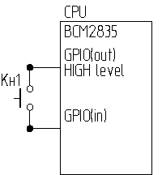
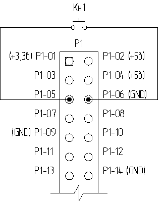
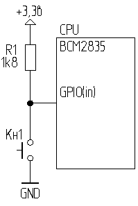
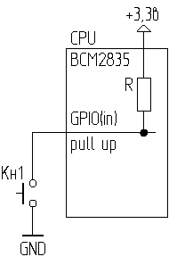

Во второй части статей «GPIO для чайников» мы подключали кнопку между двумя портами. Один порт устанавливали на «вывод» и в состояние «1», а другим портом читали эту «1» через кнопку. При отпущенной кнопке на втором порту читался «0», а при нажатой- «1»:

Всё вроде бы работало. Но недавно у такого способа подключения обнаружился один неприятный недостаток. Такое подключение кнопки оказалось неустойчивым к помехам. Когда я свою RPI подключил к сети при помощи Wi-Fi USB донгла, то все программы, в которых использовалось такое включение кнопки, просто сошли с ума. RPI детектировал нажатие кнопки даже тогда, когда к ней никто не притрагивался. Виной всему оказался длинный провод, которым была подключена кнопка к RPI. Работающий Wi-Fi адаптер наводил на нём потенциал, с уровнем достаточным для детектирования «1» на порте GPIO. Такое поведение кнопки никуда не годится. Нужно принимать меры по помехозащищённости. В данном случае поможет использование экранированного провода до кнопки, либо даже простое уменьшение длины проводов, соединяющих кнопку с RPI. Но можно поступить проще. Раз наш RPI реагирует на помехи при отсутствии сигнала на входе, то разумным решением будет перевести порт, которым мы читаем состояние кнопки в состояние логической «1». Раз на нём всегда будет «1», то уже никакая помеха не сможет этот порт перевести в «0». А значит, наш порт станет невосприимчивым к помехам.
Давайте подключим нашу кнопку по такой схеме:

Если вы использовали кнопку от системного блока с коннектором BLS, то достаточно его просто развернуть на 90 градусов. Теперь наша кнопка подключена к порту Р1-05 и к пину «GND» (земля, или 0 по русски).
Ну и напишем такую простенькую программу button1.c
// Проверка работоспособности кнопки, подключённой
// к порту Р1_05 и GND.
// Компиляция: gcc -o button1 button1.c -lbcm2835 -lrt
// Исполнение: sudo ./button1
#include <stdio.h>
#include <bcm2835.h>
#define PIN_IN RPI_GPIO_P1_05
//#define PIN_IN RPI_V2_GPIO_P1_05 // Для RPI ревизии v2 раскомментировать эту строку и удалить предыдущую
int main()
{
if (!bcm2835_init()) // Инициализация GPIO
return 1; //Завершение программы, если инициализация не удалась
bcm2835_gpio_fsel(PIN_IN, BCM2835_GPIO_FSEL_INPT); // Порт на ввод
printf("Ждём нажатия на кнопку.\n");
while(bcm2835_gpio_lev(PIN_IN)) // Повторяем все действия, заключённые в скобки {} пока не будет нажата кнопка
{
}
printf("Кнопочка нажата!\n");
return (bcm2835_close ()); // Выход из программы
}
Компилируем и запускаем. Убеждаемся, что наша кнопка, включённая таким образом, действительно работает. Можно после запуска программы повертеть провод перед Wi-Fi донглом и убедиться, что RPI никак на него не реагирует, а реагирует только на нажатую кнопку.
А теперь разберёмся, как это работает.
Если мы зайдём на страницу http://elinux.org/RPi_Low-level_peripherals
То в таблице «Header Pinout, bottom row:» мы увидим такое описание портов:
Pin Number Pin Name Rev1 Pin Name Rev2 Hardware Notes
P1-01 3.3 V 3.3 V 50 mA max (01 & 17)
P1-03 GPIO 0 GPIO 2 1K8 pull up resistor
P1-05 GPIO 1 GPIO 3 1K8 pull up resistor
P1-07 GPIO 4 GPIO 4
Мы видим, что в описании порта Р1-05 написано «1K8 pull up resistor». Это значит, что в RPI вывод этого порта подключён к шине +3,3в через резистор сопротивлением 1,8кОм. Это называется подтяжкой. А раз этот порт подключён к +3,3в, то это значит, что в любом состоянии на входе этого порта будет присутствовать логическая «1». Если мы теперь с учётом этой информации перерисуем схему подключения нашей кнопки, то она у нас будет выглядеть вот так:

Теперь мы видим, что если кнопка не нажата, то с порта мы будем считывать «1». А когда мы нажмём на кнопку, то мы замкнём вход порта с «землёй», а значит, получим на входе в порт логический «0». Т.е. нам теперь, чтобы отследить нажатие на кнопочку, нужно просто ждать, когда на порте появится «0». Собственно чем наша выше написанная программа и занимается.
Цикл while(bcm2835_gpio_lev(PIN_IN)){} повторяется до тех пор, пока функция bcm2835_gpio_lev(PIN_IN) не вернёт в программу «0». Мы эту функцию уже использовали раньше в наших программах, только там был ещё оператор инвертирования результата, в виде восклицательного знака перед функцией, что означало, что мы ждём возвращения «1». Тут же мы ждём возвращения «0», по этому от инверсии мы избавились.
При замкнутой кнопке у нас через резистор течёт небольшой ток I=U/R=3,3/1800=1,8мА. Ток этот очень маленький, что практически никак не скажется на потребляемой RPI мощности.
Как видим, это очень удачный способ подключения кнопки к RPI. Мало того, что он очень помехоустойчивый (ведь помеха может навести в проводе ток, но вот избавить провод от тока она не в состоянии), так ещё мы освободили целый порт для любых других нужд. Одна кнопка- один порт.
Но, разумеется, это совершенно не значит, что наша первая схема подключения кнопки оказалась никуда негодной. Например, подключить матричную клавиатуру можно лишь первым способом. Тогда например, для подключения клавиатуры 4х4 кнопки нам понадобится всего 8 портов. Если же мы попытаемся подключить такую клавиатуру по нашему сегодняшнему способу, то мы займём 16 портов GPIO. И тем не менее, для всех остальных случаев, нашу сегодняшнюю схему подключения можно считать оптимальной.
Теперь мы знаем, что благодаря наличию подтяжки на порту Р1-05, мы можем легко использовать этот порт для подключения кнопки. Так же из таблицы следует, что подтяжкой обладает ещё и порт Р1-03. И мы можем точно так же подключить к нему ещё одну кнопочку. Возникает резонный вопрос: «А если я хочу подключить, скажем, 3 кнопочки, а портов с подтяжкой всего 2, как быть?». Ответ прост- можно выполнить подтяжку любого порта самостоятельно, впаяв дополнительный резистор на своей плате и соединив им любой другой порт GPIO с +3,3в. К стати, сопротивление этого резистора не обязано быть именно 1,8кОм. Схема будет прекрасно работать и с резистором в 10кОм. Значит нам можно поставить в цепь подтяжки порта любой резистор сопротивлением от 1,8 кОм и до 10-12кОм. Но не торопитесь бежать за паяльником. У RPI маленькие секреты ещё не закончились. Попробуем обойтись без самодельной подтяжки.
Для начала предлагаю провести маленький эксперимент. Давайте подключим нашу кнопку к портам Р1-13 и Р1-14. Р1-13, это обычный порт GPIO, а Р1-14, это GND. Собственно у нас ничего не изменилось. Всё так же наша кнопка подключена между портом GPIO и GND, за исключением того, что этот порт не имеет резистора подтяжки. Изменим нашу программу button1.c заменив определение порта Р1-05 на Р1-13. Откомпилируем программу и запустим её. Мы видим, что она не работает должным образом. Программа считает, что кнопка нажата, хотя мы к ней и не притрагивались. А всё потому, что отсутствует подтяжка порта и на нём всё время находится «0». А по логике работы нашей программы, наличие «0» на порту говорит о нажатии кнопки.
Пришло время вспомнить о том, что я говорил в первой части статей «GPIO для чайников». А говорил я о том, что внутри процессора BCM2835 порты GPIO имеют возможность подключения внутренними резисторами подтяжки как к +3,3в, так и к 0 (или GND). Так почему бы нам не воспользоваться этим чудесным свойством в своих корыстных целях? Для воплощения нашей задумки нам достаточно лишь включить подтяжку порта Р1-13 к +3,3в. Тогда наша схема подключения кнопки автоматически превратится в такую:

По сути, наша схема ничуть не изменилась. Только подтягивающий резистор переместился внутрь нашего процессора BCM2835.
Для включения подтягивающего резистора существует функция
void bcm2835_gpio_set_pud (uint8_t pin, uint8_t pud)
где:
Ну что ж, добавим эту функцию в нашу программу. Теперь она должна выглядеть так:
// Проверка работоспособности кнопки, подключённой
// к порту Р1_13 и GND.
// Компиляция: gcc -o button2 button2.c -lbcm2835 -lrt
// Исполнение: sudo ./button2
#include <stdio.h>
#include <bcm2835.h>
#define PIN_IN RPI_GPIO_P1_13
//#define PIN_IN RPI_V2_GPIO_P1_13 // Для RPI ревизии v2 раскомментировать эту строку и удалить предыдущую
int main()
{
if (!bcm2835_init()) // Инициализация GPIO
return 1; //Завершение программы, если инициализация не удалась
bcm2835_gpio_fsel(PIN_IN, BCM2835_GPIO_FSEL_INPT); // Порт на ввод
bcm2835_gpio_set_pud(PIN_IN, 2); // Включаем подтяжку порта к +3,3в
printf("Ждём нажатия на кнопку.\n");
while(bcm2835_gpio_lev(PIN_IN)) // Повторяем все действия, заключённые в скобки {} пока не будет нажата кнопка
{
}
printf("Кнопочка нажата!\n");
bcm2835_gpio_set_pud(PIN_IN, 0); // Отключаем подтяжку порта
return (bcm2835_close ()); // Выход из программы
}
Сохраним нашу программу под именем button2.c , скомпилируем и запустим. Всё, теперь наша программа адекватно реагирует на нажатие кнопки.
Ну вот, теперь вы знаете ещё полтора способа подключения кнопки к RPI. Настало время испытать наши знания в деле. На этот раз мы не будем играть с моргающими светодиодами. Наших знаний уже вполне достаточно, чтобы превратить RPI в самостоятельное, работающее, законченное устройство, которое сможет выполнять уже полезную работу. Предлагаю превратить наш RPI в интрнет-радио! Причём это «радио» должно быть автономным, т.е. обходиться без клавиатуры, мыши и монитора. А управлять мы им будем при помощи кнопочек, которые мы только что научились подключать к RPI.